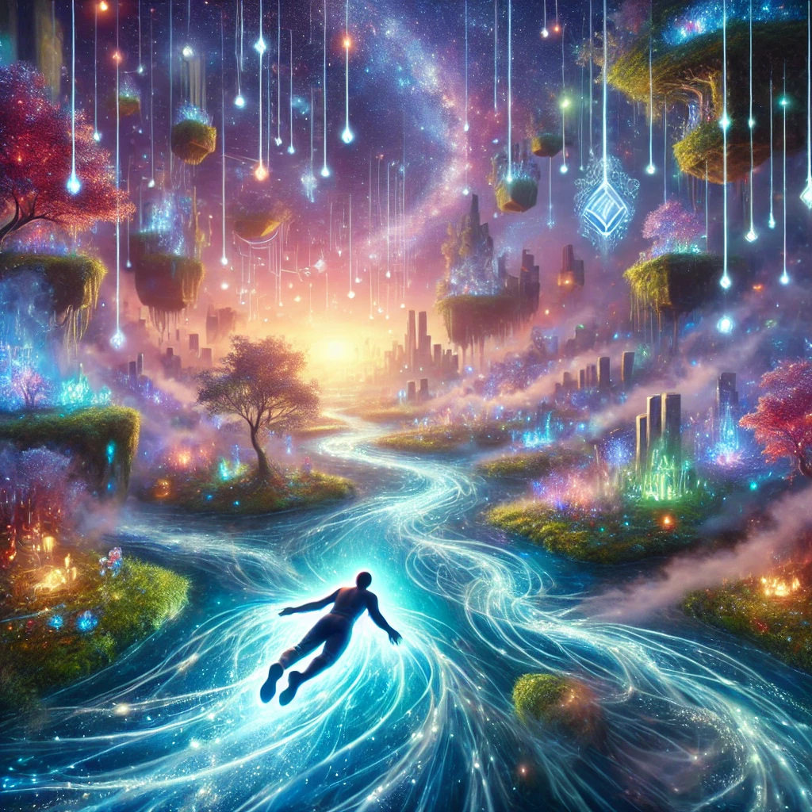

You close your eyes and release all resistance, letting the current of energy guide you. The pull is gentle yet undeniable, like a river carrying you toward an unseen destination. As you surrender, the world around you begins to shift.
The landscape transforms into a dreamlike realm, filled with rivers of light winding through floating cities and glowing jungles. The flow carries you effortlessly, and you feel a deep sense of connection with everything around you. A voice resonates within you:
“To follow the flow is to trust the universe. Resistance creates struggle, but surrender reveals the path.”
The current leads you to a shimmering clearing where choices begin to form, each glowing with its own unique energy. The flow slows, inviting you to decide where to go next.

Where will the flow take you?